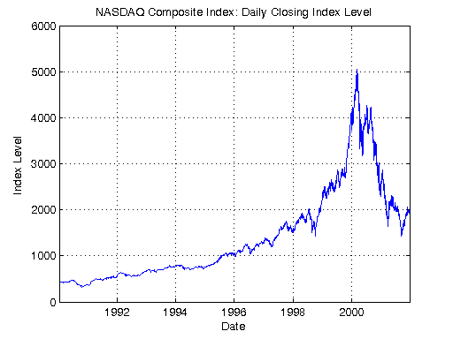
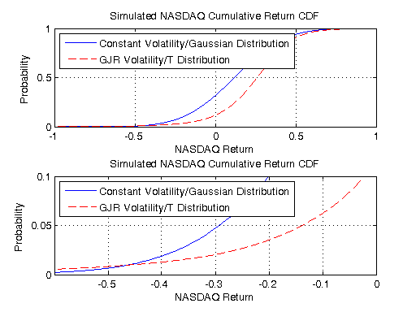

Sequential Value-at-Risk Simulation
This demo assesses the value at risk (VaR) of the NASDAQ Composite Index over a 12-month holding period. Additionally, the demo compares the simulation-based VaR results of two models of the NASDAQ returns.
We use the Monte Carlo simulation capabilities of the Econometrics Toolbox™ to estimate the VaR of the NASDAQ index. The first model of the NASDAQ index is the most traditional, and simply assumes a constant mean, constant volatility process with conditionally Gaussian returns. The second model also assumes a constant mean, but allows for time-varying volatility by fitting the NASDAQ series to a GJR model with conditionally t-distributed returns.
For details about the value-at-risk model and the graphs that are generated, view the code for pctdemo_setup_garch.
Prerequisites:
Related demos:
Contents
Load the Demo Settings and the Data
We start by getting the demo difficulty level. If you want to use a different demo difficulty level, use paralleldemoconfig and then run this demo again. See Customizing the Settings for the Demos in the Parallel Computing Toolbox for full details.
difficulty = pctdemo_helper_getDefaults();
We call the function pctdemo_setup_garch to perform all the initializations for this demo. The most important function output arguments are the time horizon, the number of simulations to perform, and both models to the NASDAQ index. The demo difficulty level determines the number of simulations we perform. You can view the code for pctdemo_setup_garch for full details.
[fig, constant, GJR, horizon, nPaths, eFit, sFit] = ...
pctdemo_setup_garch(difficulty);
startTime = clock;
 Run the Simulation
We now perform nPaths simulations of horizon trading days for both models. The pctdemo_task_garch function calls garchsim to perform the simulations, and then calculates the cumulative returns as if we held the NASDAQ Composite Index for the entire simulated period. You can view the code for pctdemo_task_garch for full details.
constantCumReturns = pctdemo_task_garch(constant, horizon, nPaths); GJRCumReturns = pctdemo_task_garch(GJR, horizon, nPaths, eFit, sFit);
Measure the Elapsed Time
The time used for the sequential computations should be compared against the time it takes to perform the same set of calculations using the Parallel Computing Toolbox in the Distributed Value-at-Risk Simulation demo. The elapsed time varies with the underlying hardware.
elapsedTime = etime(clock, startTime);
fprintf('Elapsed time is %2.1f seconds\n', elapsedTime);
Elapsed time is 31.7 seconds
Plot the Results
The first plot illustrates the entire cumulative distribution function. The second plot highlights the lower tail of the distributions, corresponding to portfolio losses, and allows us to compare the predicted value at risk at the high confidence levels, that is at low levels of probability. You can view the code for pctdemo_plot_garch for full details.
pctdemo_plot_garch(fig, constantCumReturns, GJRCumReturns);